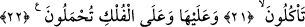

ÜSTÜNÜZDE
YEDİ YOL YARATTIK
17. Andolsun biz, sizin üstünüzde yedi yol yarattık. Biz yaratmaktan habersiz
değiliz.
18. Gökten uygun bir ölçüde su indirip onu arzda durdurduk. Bizim onu
gidermeye de elbet gücümüz yeter.
19. Böylece onun (yağmurun) sayesinde sizin yararınıza hurma bahçeleri ve
üzüm bağları meydana getirdik. Bunlarda sizin için birçok meyveler vardır ve siz
onlardan yersiniz.
20. Tûr-i Sînâ’da da yetişen bir ağaç daha meydana getirdik ki, bu ağaç hem yağ
hem de yiyenlerin ekmeğine katık edecekleri (zeytin) verir.
21. Hayvanlarda sizin için elbette ibretler vardır. Onların karınlarındakinden
(sütlerinden) size içiririz. Onlarda sizin için birçok faydalar daha vardır; etlerinden
de yersiniz.
22. Onların üzerinde ve gemilerde taşınırsınız.
“Andolsun biz, sizin üstünüzde yedi tabaka” yedi göğün katlarını “yarattık.” Nitekim
el-Müfredât’ta “, göğün tabakaları/katlarıdır.” der. Kat kat olan yedi
gökyüzü, demektir. Böyle isim verilmesi, nalın ayağa çakılması gibi kat kat birbiri
üzerine konulmaları sebebiyledir. Çünkü üzerinde kendisinin misli olan her şey onun
katıdır.
“Biz yaratmaktan” bu mahlûktan, yani göklerden “habersiz değiliz.” Göklerin
durumunu ihmâl ve göz ardı eder değiliz. Bilakis onları yok olmaktan ve bozulmaktan
koruruz. Hikmetin gereğine ve meşîetin taalukuna göre onlar için takdir ettiğimiz
kemâlin sonuna ulaşana kadar onları idâre eder/çekip çeviririz.
Kâşifî der ki: “Yaratılmışların hiçbirinden gafil değiliz; onların hayır ve şer, fayda ve